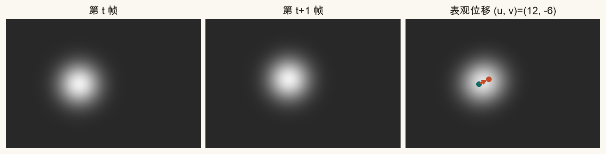
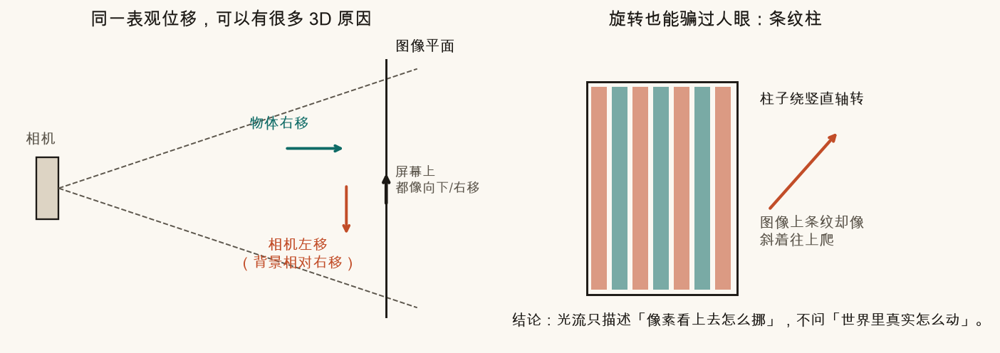
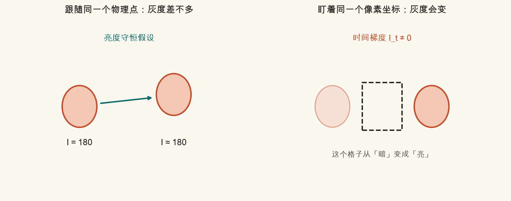
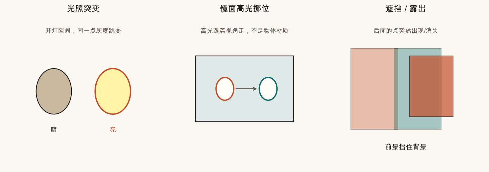
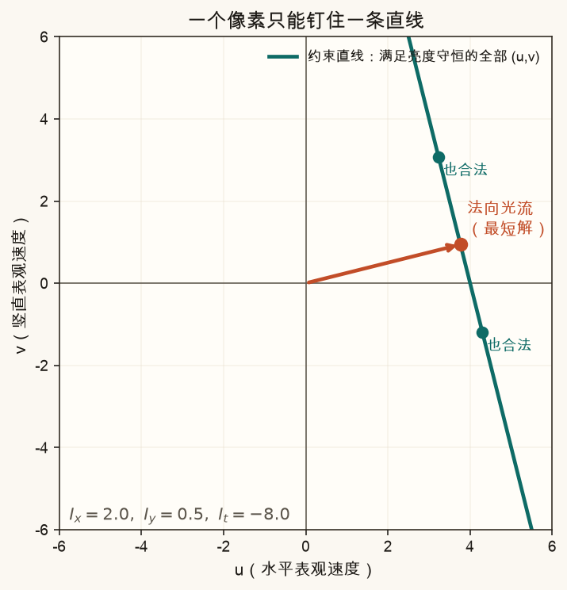
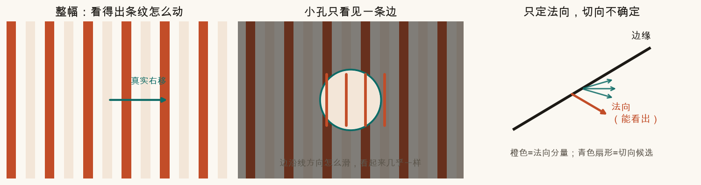
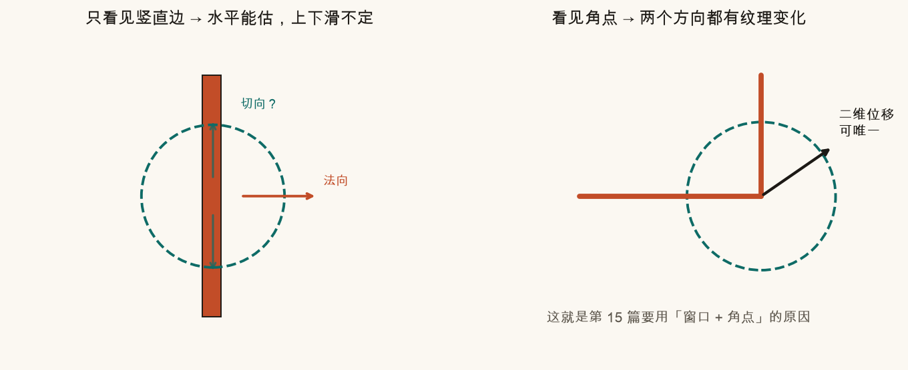
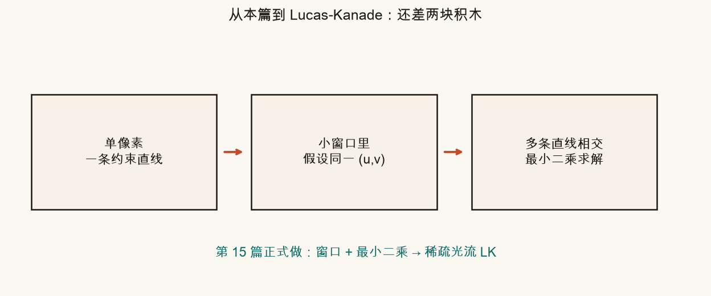

第 14 篇 · 光流重点 · 约 55 分钟 · 概念课
从一个小亮斑在两帧之间「挪了几个像素」讲起。本篇几乎不算算法：先钉死光流在回答什么问题，再讲亮度守恒从哪来、何时破，最后用遮罩动画亲手感受孔径问题。读完你应该能自然接上第 15 篇的 Lucas-Kanade。
忘掉公式。想象两张连续的照片（视频的相邻两帧）：
人眼立刻会说：「它往右上挪了。」计算机也想回答同一个问题——但要用数字：水平挪了多少像素、竖直挪了多少像素。这两个数合起来写成向量 (u, v)，就是这一小块的光流直觉。

类比：你在玻璃窗上用笔点一个小墨点，然后玻璃后面有人走过。墨点相对「窗框格子」挪了几个格——这是平面上的位移。墨点背后那个人在三维空间里怎么迈步，窗上的格子并不会直接告诉你。
拖动滑块，看「下一帧」亮斑怎么走，以及读数 (u, v)。这就是光流在图像平面上的全部内容：像素坐标的变化。
正式说法（请背住这一句）：
光流是图像平面上的二维表观运动场：每个像素（或每个小块）看起来往哪儿挪、挪多快。它不等于物体在三维世界里的真实速度。
为什么要强调「表观」？因为屏幕上「往右挪了 5 像素」可以来自很多完全不同的三维故事：

对拼接与防抖来说，多数时候我们只需要表观：像素怎么对齐、轨迹怎么抖，不必先还原完整 3D 速度场。等要用深度、结构时，再另开模型——那已经超出「光流」四个字本身。
站在公交站拍对面的车：车向右开，光流大致向右；你自己突然向左横移半步，背景也会出现向右的光流。两种情况下，「屏幕上的箭头」可能长得很像，但世界里发生的事不同。
光流算法几乎都从一个大胆但好用的假设出发：
同一物理点，在相邻两帧里的灰度近似不变
白话：你跟着那颗「小亮斑」本身走，它的亮度别突然变。变的是它所在的像素坐标，不是它「自己变黑变白」。

它不是物理定律，而是工程近似：
类比：你用记号笔在桌面上点一个点，手机连拍两张。只要灯没闪、墨点没被手挡住，两张里那个点的「灰度数」差不多——差的是它落在照片的哪一格。
下面这些情况，亮度守恒会撒谎，光流也容易翻车：

交互：切换「守恒 / 破坏」模式。守恒时，移动亮斑，跟随点的灰度读数几乎不变；破坏模式下开灯，同一物理点灰度跳变——约束方程的前提就松了。
把「跟着物理点走，灰度不变」写成一点微积分味道（别怕，只记形状）：
Ix · u + Iy · v + It = 0
白话拆开：
一个方程、两个未知数 → 解不唯一。几何上，所有满足它的 (u, v) 落在 (u, v) 平面的一条直线上。

本篇不算怎么解这条直线。你只要留下印象：单像素信息不够钉死二维运动。第 15 篇会在窗口里把很多条「直线」叠起来，用最小二乘找一个折中的 (u, v)。
这是本篇的核心直觉实验。
想象你透过钥匙孔看一面有竖条纹的墙。墙其实整体向右平移。可是孔太小，你只看见一条竖边在眼前。边「沿线方向」向上滑一点或向下滑一点，透过小孔看起来几乎一样——你只知道「边在靠近或远离孔心」，不知道它有没有沿着自己「蹭」。

青色圆是「孔径」。条纹按真实运动（可含切向）在动。缩小孔径时，你很难分辨「只法向」和「法向+切向」——读数会提示歧义变大。放大孔径或换成「角点图案」，歧义下降。
孔径问题告诉我们：一条边不够。解药的方向很直观：


稠密光流（第 17 篇）换另一剂药：不靠角点，而靠「邻居运动应该平滑」的额外假设。殊途同归——都是在给欠定问题加约束。
source .venv/bin/activate # 若尚未激活
MPLCONFIGDIR=/tmp/mpl-cache python code/ch14_flow_intro.py会写出 ch14_blob_shift.png、ch14_apparent_vs_3d.png、ch14_brightness_*.png、ch14_constraint_line.png、ch14_aperture.png、ch14_corner_vs_edge.png、ch14_bridge_lk.png，以及你的 ch14_my_blob.png、ch14_my_constraint.png。终端应打印「自检通过」。
打开 code/ch14_flow_intro.py 顶部的参数区。
BLOB_SHIFT_X / BLOB_SHIFT_Y 改成很大的数（比如 40, −20），看 ch14_my_blob.png——表观位移箭头变长。想一想：位移太大时，下一篇的「单层 LK」为什么会吃力（需要金字塔）。GRADIENT_IX 设为 0、GRADIENT_IY 设为 3，观察 ch14_my_constraint.png：约束直线近乎水平，法向光流几乎只有竖直分量——对应「只看见水平边」。GRADIENT_IX 与 GRADIENT_IY 都改成接近 0：梯度消失，约束退化，脚本仍会画，但直线失去意义——平坦区域无法估光流。光流是图像平面上的二维表观运动场。不等于真实 3D 速度；同一表观可由多种三维运动或光照变化造成。
同一物理点在相邻帧的灰度近似不变。开灯/曝光突变、镜面高光、遮挡露出等都会破坏它。
亮度守恒给出 Ix u + Iy v + It = 0：一个方程、两个未知数 (u,v)，解落在一条直线上。
垂直于边缘的法向分量往往能看出；顺着边缘的切向分量不确定。
孔内主要只看到法向造成的亮度变化；切向滑动几乎不改变孔内灰度模式，所以多种切向速度对应几乎同一观测。
在特征点附近的小窗口内假设共用同一 (u,v)，把多条亮度约束叠成超定方程，用最小二乘求解。
概念钉牢了。下一篇进入真正的稀疏算法：Lucas-Kanade——窗口、法方程、以及 OpenCV calcOpticalFlowPyrLK 在「单层」时在做什么。